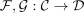
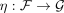
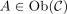
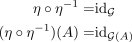
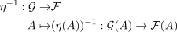
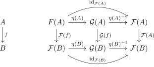
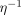

natural isomorphism and isomorphism on the objects
1. Proposition
Let  be categories,
be categories,

be functors and
a natural transformation.TFAE:
 is a natural isomorphism with a canonical inverse
is a natural isomorphism with a canonical inverse- for

it holds, that is an isomorphism in
is an isomorphism in
2. Proof
2.1. 1)  2)
2)
By assumption, there exists an , such that

Analougosly for
η-1 ˆ η =&
(η-1 ˆ η)(A) =& (A)
2.2. 2) 1)
Let

be the unique inverse morphism.
Then following diagram commutes,
hence
Thus following diagram commutes

hence since  is an isomorphism and thus especially also an epimorphism
is an isomorphism and thus especially also an epimorphism
by diagram and pasting epimorphism, it follows that

is natural
note, that no choice was made, hence can be regarded as canonical.3
a